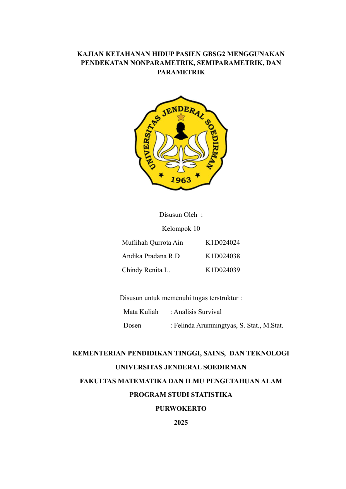

Survival Analysis of GBSG2 Patients
Statistical survival analysis on breast cancer patient data using the GBSG2 dataset. This project applies Kaplan–Meier estimation, Cox Proportional Hazard modeling, and Weibull distribution to analyze survival patterns and influential factors.